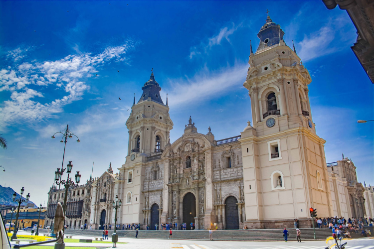
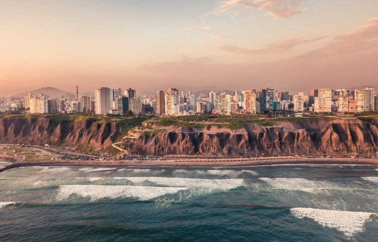

Lima ― 標高154m リマ
ペルー共和国の首都であるリマは、ペルーの総人口の3分の1近くが集中しており、ブラジルのリオ・デ・ジャネイロやサン・パウロと並ぶ南米大陸有数の大都市でもあります。そのため毎日アメリカやヨーロッパから何十便もの飛行機が、ホルヘ・チャペス国際空港に到着します。リマはチャラと呼ばれる海岸砂漠地帯に位置し、年間を通してほとんど雨が降ることはなく、5月にほんのわずか"インカの涙"と呼ばれる霧雨があるだけです。また、ペルーは南半球に属しているため日本とは季節が真逆となり、ペルーの7～8月は冬となるのですが、その冬の間はガルーア（garúa）という霧が空を覆い、どんよりとした曇天の日が続きます。 旧市街、リマ区（セントロ）の古い町並みは、1988～1991年にユネスコの世界文化遺産に登録されています。 かつてリマの中心だった旧市街ですが、近年は治安の悪さなどからオフィスが集まる中心地は新市街に移っています。
リマの見どころ
旧市街―セントロ Centro
- アルマス広場 Plaza de Armas
- カテドラル Catedral
1535年、内陸のハウハから250km離れたリマへ首都を移すと決めたフランシスコ・ピサロは、スペインのイベリア様式にのっとり、アルマス広場を中心に町を築いていきました。現在もアルマス広場は旧市街の中心地で、広場を取り囲むように古い建物が残っています。北東に大統領官邸、北西にはリマ市庁舎があるため、周辺の警備は厳重です。
町の中心となる広場の正面にカテドラルが堂々とそびえている風景は、南米のどの都市でも目にすることができます。しかしその中でもリマのカテドラルは、南米きっての征服者、フランシスコ・ピサロ自らの手で礎石を置いた、ペルーで最も古いカテドラルです。その日は1535年1月18日、リマ建都の日でもあります。ピサロがペルーへ上陸したのは、黄金の都と噂されていた“インカ帝国”を目指していたとのことです。カテドラル内には、金・銀箔・彫刻の見事な祭壇が16もあるほか、14世紀の宗教画、歴代インカ帝国の肖像画などが飾られています。

新市街
- サン・イシドロ San Isidro
- ミラフローレス Miraflores
サン・イシドロは旧市街の南に広がる、古くからのお屋敷町です。現在はペルーの大手企業や銀行が集まるビジネス拠点として発展しています。高級ホテルやレストラン、百貨店も立ち並び、人気の観光地でもあります。特にメトロポリターノのカナバル・イ・モレイラ駅付近とコンキスタドーレス通りにはおしゃれなブティックや人気のレストランが集まっており、夜遅くまでにぎわっています。
旧市街のセントロから海岸へ向かうと、サン・イシドロと並ぶ高級住宅地のミラフローレスがあります。人通りが多い町ではありますが、セントロの喧騒とは違う落ち着きをもった町です。1番の繁華街はラルコ通りやその周辺で、ブティック、レストラン、デパート、カフェなどが軒を連ねており、おしゃれな雰囲気があります。また、海水浴ができるビーチや、ディアゴナル通りでは食べ歩きが楽しめるオープンカフェが並び、夕方から夜にかけてはたくさんの若者でにぎわいます。
